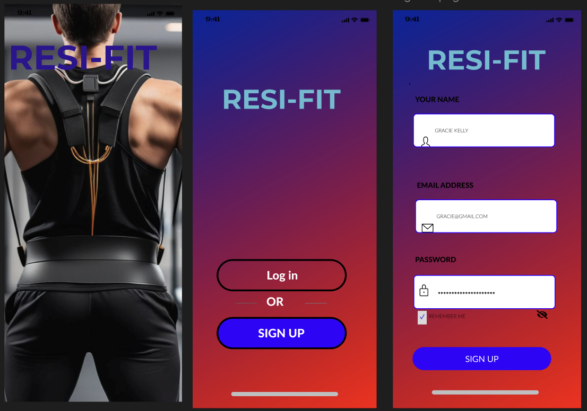
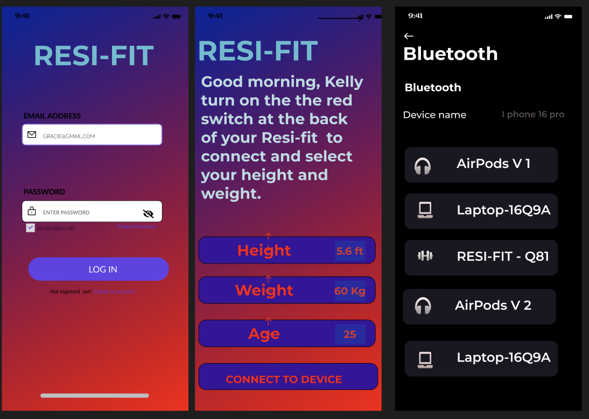

ESP32 Microcontroller
The ESP32 microcontroller plays a central role in ResiFit, handling wireless communication between the device and the mobile app via Bluetooth. This enables users to adjust resistance levels directly from their phones. The ESP32 controls a motor system that regulates the tension of resistance bands, which are coiled and connected through the user's arms, allowing for dynamic adjustments in resistance to match workout intensity.
These motor-driven resistance bands provide variable resistance that simulates the feel of traditional weightlifting but with added portability and adjustability. By increasing or decreasing motor tension, users can progressively challenge their muscles, building strength in real time while performing skill-based movements. The bands, powered by the motor's precise adjustments, enable a smooth, controlled range of motion, allowing athletes to enhance their strength without sacrificing the skills integral to their sports. This combination of ESP32 control, motor precision, and adjustable resistance bands makes ResiFit a versatile training tool for customized workouts.
Main Component
This 3D diagram represents the main structural component of the ResiFit device, which serves as the central hub where all primary components attach, including the motor, ESP32 microcontroller, and resistance bands. This part is designed to integrate seamlessly with the vest, securely holding all the elements in place and allowing the device to deliver resistance while keeping the components stable during movement.
- Top and middle sections: These sections likely house the motor and control mechanisms that manage resistance adjustments, driven by signals from the ESP32 microcontroller.
- Base structure: This is where the ESP32 and power supply could be mounted, with openings or supports to hold wires and components in alignment.
This central part ensures that ResiFit functions as a cohesive unit, with each component optimally positioned for performance and user comfort.
ResiFit Mobile App


The ResiFit mobile app is currently in the development stage and will serve as the central interface for controlling and customizing workouts. Once completed, the app will allow users to adjust resistance levels in real-time with just the click of a button, enabling them to personalize their workout intensity instantly.
Our goal is to design the app with an intuitive, user-friendly layout that makes it easy for users to interact with their ResiFit device. Planned features include tracking workout data, viewing progress, and receiving feedback on performance, making ResiFit a complete solution for an optimized workout experience. The app will also focus on delivering a seamless connection between the device and smartphone, ensuring that resistance adjustments and other controls are smooth and responsive.